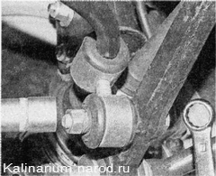
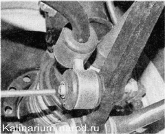
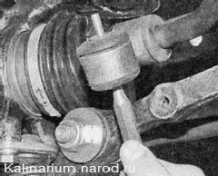
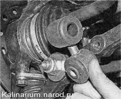

Замена стоек стабилизатора поперечной устойчивостиДля выполнения работы потребуется смотровая канава или эстакада. Снятие 1. Подготавливаем автомобиль к выполнению работы. 2. Двумя ключами на 17 мм отворачиваем гайку болта крепления стойки стабилизатора к поперечному рычагу. 
3. При помощи бородка подходящего диаметра выбиваем болт из стойки и рычага. 
4. Смазываем конец штанги стабилизатора мыльным раствором. 5. Вставляем в отверстие нижнего сайлент-блока бородок и, используя его как рычаг, проворачиваем стойку из стороны в сторону, постепенно сдвигая ее к краю штанги.- 
6. Снимаем стойку со штанги. Аналогично снимаем стойку с другого конца штанги стабилизатора. Установка Устанавливаем стойки в обратной последовательности, предварительно смазав концы штанги стабилизатора мыльным раствором. |